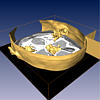
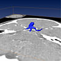
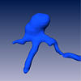
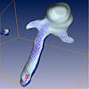
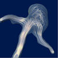
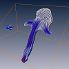
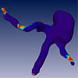

These demos show the analysis of a cerebral aneurysm starting from the CT image stack over grid generation up to the visualization of simulated blood flow. The data is provided by courtesey of Dr. Klaus Affeld and Dr. Leo Goubergrits, Charite, Berlin.
 CT image stack
CT angiography of a patient with a cerebral aneurysm. You can see an Isosurface reconstruction of both, vessels and skull. Try to pick and move the OrthoSlice plane. Surface model
Surface model of the aneurysm. In order to generate this model the CT data has been interactively segmented using the Amira's Segmentation Editor. The resulting label field has been triangulated using the SurfaceGen module. Tetrahedral grid
Tetrahedral grid of the aneurysm. The whole interior of the model is filled with tetrahedra. Press the F2 key in the viewer window to see the grid being built up from the bottom to the top. Vector arrows
Blood flow inside the aneurysm visualized using vector arrows. The flow field has been obtained by means of a finite-element flow simulation with a separate software package (not included with Amira). Press the F2 key for a fly-through camera animation. Illuminated Stream Lines
Same flow field as above, this time visualized using illuminated stream lines(ISL). Turn off surface display by pressing the orange button on the GridVolume icon. Then try to animate the stream lines by activating the animate toggle of DisplayISL. Line Integral Convolution
Here the flow field is being visualized using so called line integral convolution (LIC). Pseudo-color display on surface
Pseudo-color display of the dynamic pressure of the simulated blood flow. The pressure is highest in areas with small cross-section.